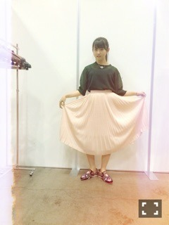
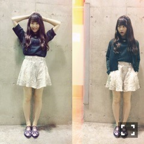
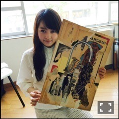

| 2015/06 10 Wed | 赤羽が降る。647回目 |
大阪、なんばパークスシネマにて
舞台挨拶がありました！
来てくださったみなさん
本当にありがとうございました。
今週は舞台挨拶まわりの週だ(^o^)

すごい...！
......
パシフィコ横浜にて個別握手会〜

トップス I am I
プリーツスカート SantaMonica
スリッポン TARO HORIUCHI

キュロット made in HEAVEN
キュロットのパイソン柄、
上に着てるサマーニットは
緑のラメが可愛いです。
これのカーディガンも便利。

この前の握手会の私服
載せてなかった写真。
ブルゾン used
花柄ガウン used
スカート mystic
靴 TOGA
このガウンは
元々ワンピースだったのを
ざっくり切って
羽織れるようにしました。
4部終わりに映画の宣伝を
させていただきました。
会場にいたみなさんは
団扇とかチラシもらったかな？
グラビアや映画の感想
ありがとうございました！
Gテレ好評だったよ〜＼(^o^)／
MdN、UTB＋、FINEBOYS
発売中です。
MdN新連載の対談、
記念すべき第一回は永戸鉄也さん。
ご存知の方もいらっしゃると
思いますが、乃木どこで
私の尊敬する人として紹介した方。
今までの自分が知ってる作品の
裏話が聞けて、本や石などの宝物、
世に出ていないコラージュ作品など
レアなものがたくさん見れて
興奮が収まらなかった〜
意気投合できた気がして
少し入り込めたかな？
と嬉しくなりました。
少年のような冒険心がある
とても素敵な方でした。
また機会があればお会いしたい！

たくさんのコラージュの中から
一枚いただきました...
蛇口から出るテトラポット！
じょしらくの防波亭手寅に
ぴったりだった！
嬉しすぎてにやけが止まらない〜
宝物にします(T ^ T)(T ^ T)
永戸さんのコラージュ作品は
コピーをして使わないから、
作品によりいろんな年代の雑誌たちの
味が出ている気がします。
この連載を通して
クリエイティブ活動を知り、
たくさんの人にその良さを
伝えていけるように頑張ります。
まだ始まったばかりで
模索中ですが、このページが
読書の皆さんにとって
楽しみとなりますように。
MdNさん、よろしくお願いします！
ちなみに今月号は
フォントアプリの連載ページにも
掲載されています〜
映画やこういう連載ができるのは
すごく得だから、その分
たくさん吸収する力と
好奇心を持って
活動の幅を広げていきたい。
まりか
コメント(577)
2015/06/10 22:42